图文实录 · 小红书 · 徐贰懂
聊聊相位对焦和反差对焦的原理（小白也能懂
相位对焦靠左右光线的视差：合焦时两路信号重合，失焦时错开，于是一次算出镜头该往哪边、差多少。反差对焦不测距离，只驱动镜头来回找对比度最高的那一点，必须走过峰值再退回来。现代机身多半先用相位锁大致位置，再用反差微调。暗光下两条路都会到物理极限，笔记最后的办法是切手动，打开峰值或放大。
1/16
封面问的是怎么选对焦模式
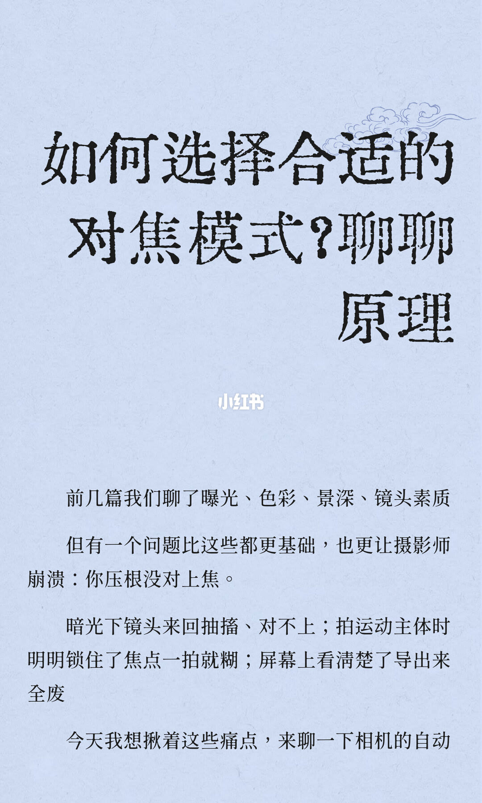
封面大字是：「如何选择合适的」「对焦模式？聊聊」「原理」。这和笔记标题「聊聊相位对焦和反差对焦的原理（小白也能懂」不是同一句。封面没有对焦点数，也没有菜单。
正文：前几篇聊了曝光、色彩、景深、镜头素质。但有一个问题比这些都更基础，也更让摄影师崩溃：你压根没对上焦。暗光下镜头来回抽搐、对不上；拍运动主体时明明锁住了焦点一拍就糊；屏幕上看清楚了导出来全废。页末停在：「今天我想揪着这些痛点，来聊一下相机的自动」。对焦两个字在下一页。
2/16
单反里，光被反光镜分成取景和测距
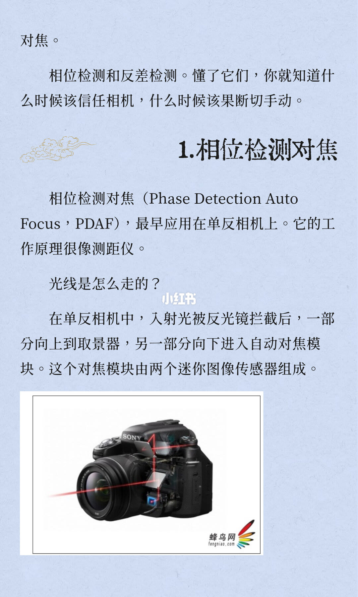
页首接上一页：「对焦。相位检测和反差检测。懂了它们，你就知道什么时候该信任相机，什么时候该果断切手动。」
小节「1.相位检测对焦」。相位检测对焦（Phase Detection Auto Focus，PDAF），最早应用在单反相机上。它的工作原理很像测距仪。小标题「光线是怎么走的？」：在单反相机中，入射光被反光镜拦截后，一部分向上到取景器，另一部分向下进入自动对焦模块。这个对焦模块由两个迷你图像传感器组成。图是一台机身剖面，向下那一路进到底部模块；图上有 SONY 和蜂鸟网 fengniao.com。这一页没有对焦点数。
3/16
二代把遮蔽像素埋进 CMOS
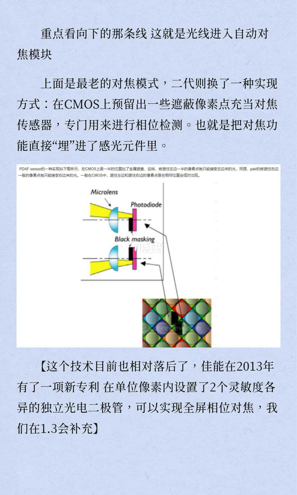
页首：「重点看向下的那条线 这就是光线进入自动对焦模块」。上面是最老的对焦模式，二代则换了一种实现方式：在 CMOS 上预留出一些遮蔽像素点充当对焦传感器，专门用来进行相位检测。也就是把对焦功能直接「埋」进了感光元件里。
图注印着：PDAF sensor 的一种实现如下图所示，在 CMOS 上面一半的位置加了金属遮盖，这样，被遮住左边一半的像素点就只能接受左边来的光。同理，pair 的被遮住右边的像素只能接受右边来的光；「右边」和后面「像素」之间有两个字，看不清，无法确认。一般在 CMOS 中，遮住左边和遮住右边的像素点是在相邻位置成对出现。示意图标了 Microlens、Photodiode、Black masking。
括号收束：这个技术目前也相对落后了，佳能在 2013 年有了一项新专利，在单位像素内设置了 2 个灵敏度各异的独立光电二极管，可以实现全屏相位对焦，我们在 1.3 会补充。2 个是这一页印出来的二极管个数，没有对焦点数。
4/16
合焦就是两束光落到同一位置
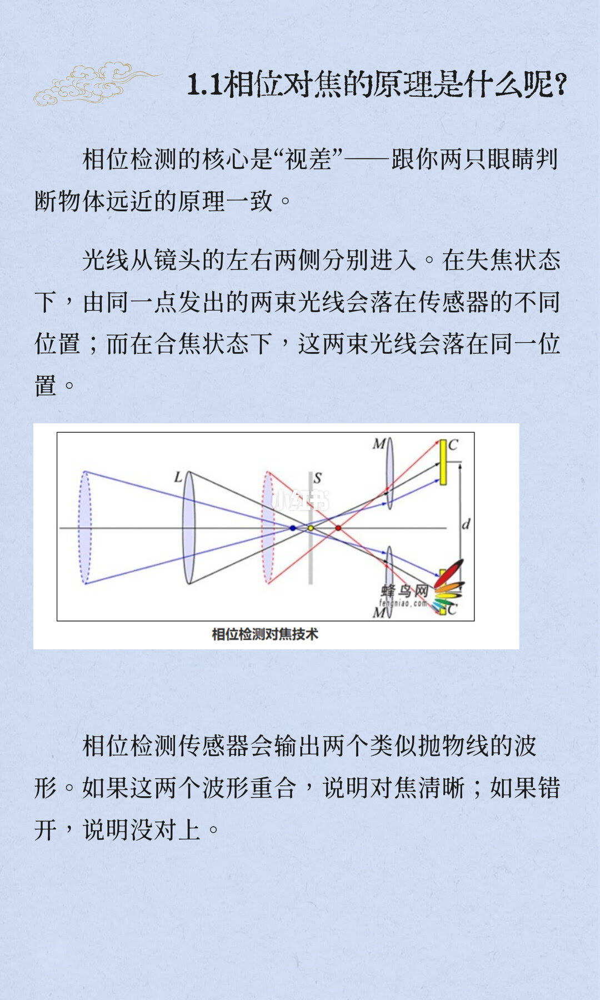
标题「1.1相位对焦的原理是什么呢？」。相位检测的核心是「视差」——跟你两只眼睛判断物体远近的原理一致。光线从镜头的左右两侧分别进入。在失焦状态下，由同一点发出的两束光线会落在传感器的不同位置；而在合焦状态下，这两束光线会落在同一位置。
图题「相位检测对焦技术」，带蜂鸟网水印。相位检测传感器会输出两个类似抛物线的波形。如果这两个波形重合，说明对焦清晰；如果错开，说明没对上。图上的字母标注看不清，无法确认。
5/16
相位差同时告诉方向和距离
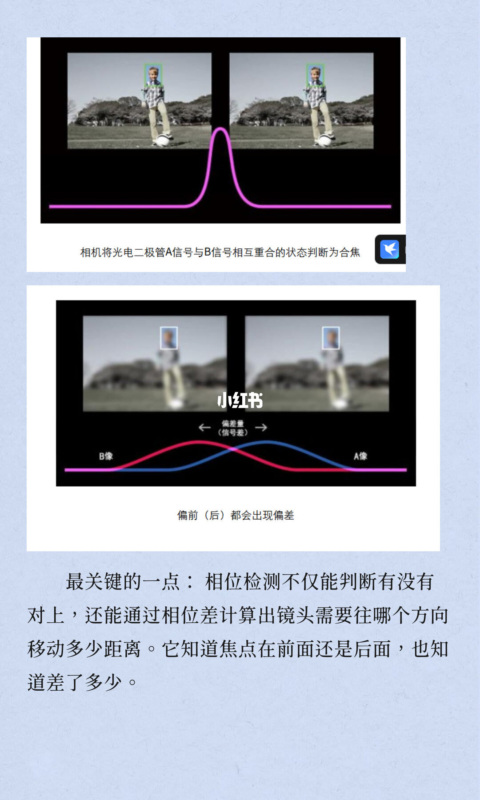
合焦图的说明：「相机将光电二极管 A 信号与 B 信号相互重合的状态判断为合焦」。失焦图写着「偏前（后）都会出现偏差」，并标了「偏差量」。偏差量后面括号里的小字看不清，无法确认。
最关键的一点：相位检测不仅能判断有没有对上，还能通过相位差计算出镜头需要往哪个方向移动多少距离。它知道焦点在前面还是后面，也知道差了多少。这一页没有具体距离数字。
6/16
轴内左右信号对称，算一次 shift
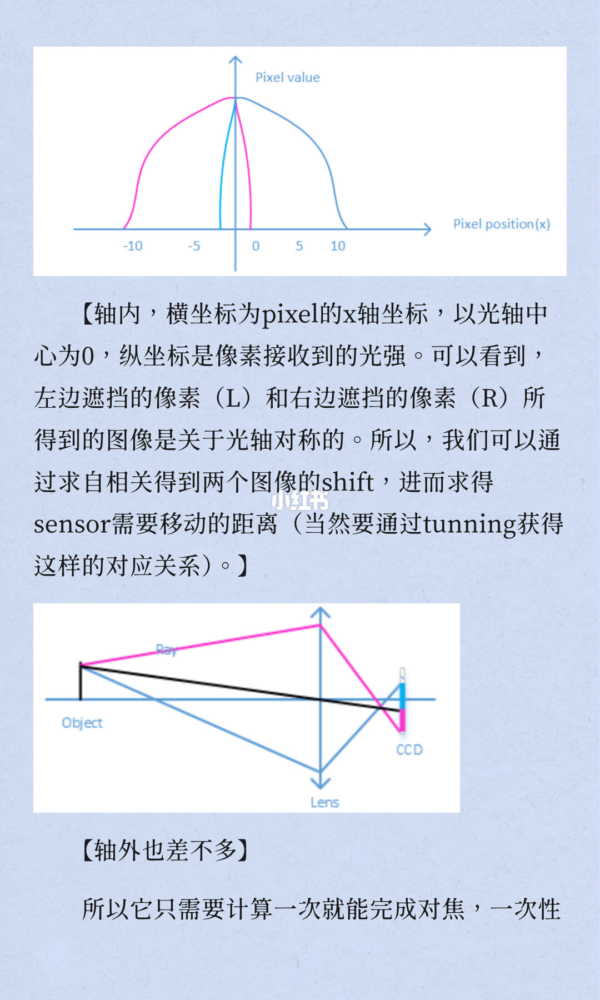
上图纵轴 Pixel value，横轴 Pixel position（x），刻度印有 -10、-5、0、5、10。正文：轴内，横坐标为 pixel 的 x 轴坐标，以光轴中心为 0，纵坐标是像素接收到的光强。可以看到，左边遮挡的像素（L）和右边遮挡的像素（R）所得到的图像是关于光轴对称的。所以，我们可以通过求自相关得到两个图像的 shift，进而求得 sensor 需要移动的距离（当然要通过 tunning 获得这样的对应关系）。tunning 按图上的拼写保留。
下图标了 Object、Lens、CCD。括注「轴外也差不多」。所以它只需要计算一次就能完成对焦，一次性——句子接到下一页。这里写的是 sensor 要移动的距离；第 5 页和第 7 页写的是镜头移动。两处用词不一致，实录两处都保留。
7/16
快的代价是暗光，双核让每个像素都参与
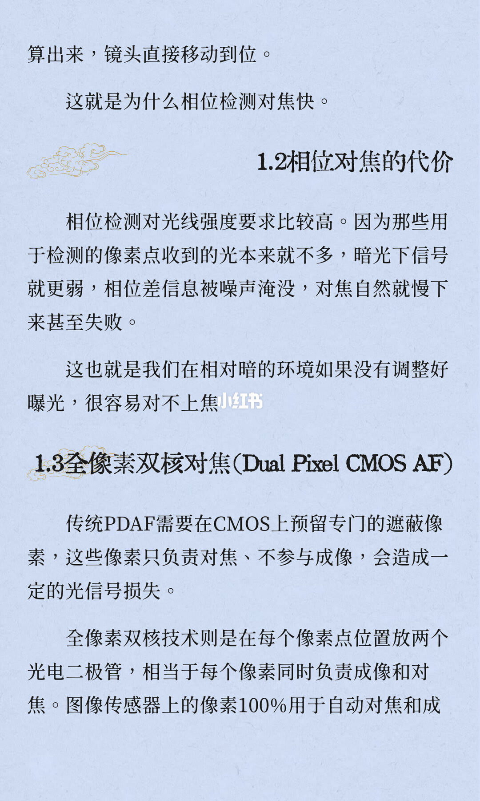
页首接上页：「算出来，镜头直接移动到位。这就是为什么相位检测对焦快。」
「1.2相位对焦的代价」。相位检测对光线强度要求比较高。因为那些用于检测的像素点收到的光本来就不多，暗光下信号就更弱，相位差信息被噪声淹没，对焦自然就慢下来甚至失败。这也就是我们在相对暗的环境如果没有调整好曝光，很容易对不上焦。
「1.3全像素双核对焦（Dual Pixel CMOS AF）」。传统 PDAF 需要在 CMOS 上预留专门的遮蔽像素，这些像素只负责对焦、不参与成像，会造成一定的光信号损失。全像素双核技术则是在每个像素点位置放两个光电二极管，相当于每个像素同时负责成像和对焦。图像传感器上的像素 100% 用于自动对焦和成——「像。」在下一页页首。100% 是这一页印出来的比例，没有对焦点数。
8/16
每颗像素分成两只光电二极管
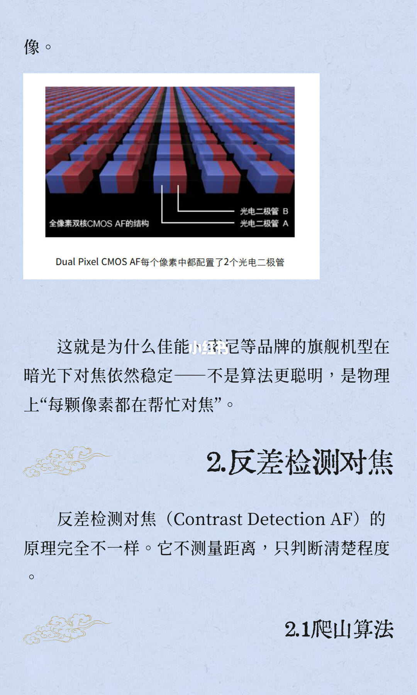
页首是上一页的尾字「像。」。图题「全像素双核 CMOS AF 的结构」，标出光电二极管 B 和光电二极管 A。图下：「Dual Pixel CMOS AF 每个像素中都配置了 2 个光电二极管」。
这就是为什么佳能、索尼等品牌的旗舰机型在暗光下对焦依然稳定——不是算法更聪明，是物理上「每颗像素都在帮忙对焦」。这句和后面第 14、15 页「暗光下对焦依然会崩」并排着，实录不把它们合成一句。
「2.反差检测对焦」。反差检测对焦（Contrast Detection AF）的原理完全不一样。它不测量距离，只判断清楚程度。页末标题「2.1爬山算法」，算法本身在下一页。
9/16
对比度上升就继续，下降了就退回
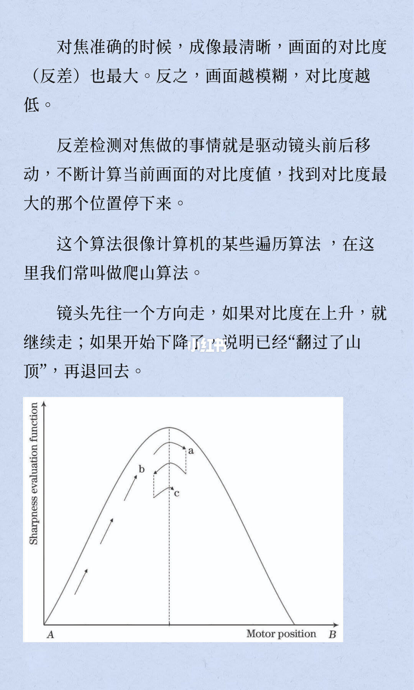
对焦准确的时候，成像最清晰，画面的对比度（反差）也最大。反之，画面越模糊，对比度越低。反差检测对焦做的事情就是驱动镜头前后移动，不断计算当前画面的对比度值，找到对比度最大的那个位置停下来。
这个算法很像计算机的某些遍历算法，在这里我们常叫做爬山算法。镜头先往一个方向走，如果对比度在上升，就继续走；如果开始下降了，说明已经「翻过了山顶」，再退回去。曲线纵轴印着 Sharpness evaluation function，横轴印着 Motor position。曲线上的路径字母看不清，无法确认。
10/16
走过站再退回，中间还有一次细扫
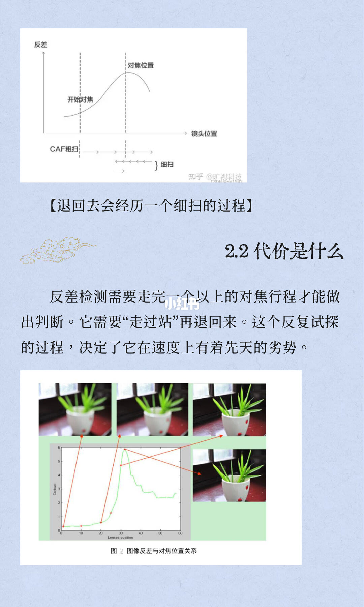
上图纵轴「反差」，横轴「镜头位置」。虚线标了「开始对焦」和峰值处的「对焦位置」。过程标了「CAF粗扫」和「细扫」。图下括注：「退回去会经历一个细扫的过程」。图角有知乎水印，账号名看不清，无法确认。
「2.2代价是什么」。反差检测需要走完一个以上的对焦行程才能做出判断。它需要「走过站」再退回来。这个反复试探的过程，决定了它在速度上有着先天的劣势。
下图题「图 2 图像反差与对焦位置关系」：同一主体从糊到清晰再变糊，对着一条反差曲线。横轴印着 Lenses position，纵轴印着 Contrast。刻度数字看不清，无法确认。
11/16
慢，是因为直接看 CMOS 上的成像
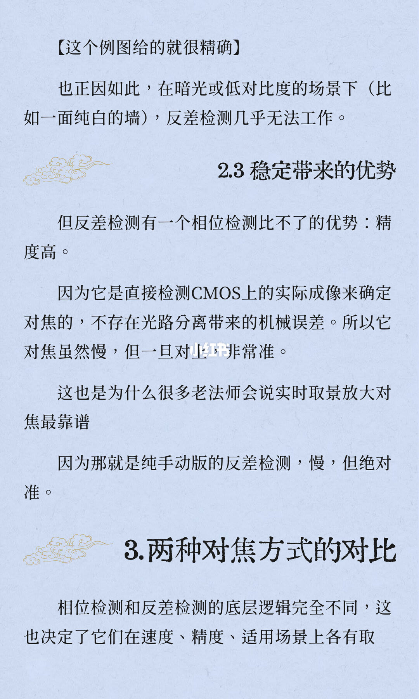
页首括注：「这个例图给的就很精确」。也正因如此，在暗光或低对比度的场景下（比如一面纯白的墙），反差检测几乎无法工作。
「2.3 稳定带来的优势」。但反差检测有一个相位检测比不了的优势：精度高。因为它是直接检测 CMOS 上的实际成像来确定对焦的，不存在光路分离带来的机械误差。所以它对焦虽然慢，但一旦对上非常准。这也是为什么很多老法师会说实时取景放大对焦最靠谱，因为那就是纯手动版的反差检测，慢，但绝对准。图上没有放大倍率。
「3.两种对焦方式的对比」。相位检测和反差检测的底层逻辑完全不同，这也决定了它们在速度、精度、适用场景上各有取——「舍。」在下一页页首。
12/16
一页把相位写成算，把反差写成试
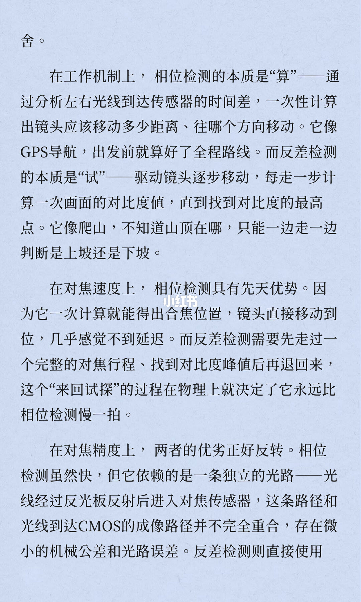
页首接上一页的「舍。」。在工作机制上，相位检测的本质是「算」——通过分析左右光线到达传感器的时间差，一次性计算出镜头应该移动多少距离、往哪个方向移动。它像 GPS 导航，出发前就算好了全程路线。而反差检测的本质是「试」——驱动镜头逐步移动，每走一步计算一次画面的对比度值，直到找到对比度的最高点。它像爬山，不知道山顶在哪，只能一边走一边判断是上坡还是下坡。
这一页印的是「时间差」。第 4 页到第 6 页写的是视差、落点错开和图像 shift，没有写时间。以图解那几页为准：相位差是位置错开，不是这一页说的时间差。
在对焦速度上，相位检测具有先天优势。因为它一次计算就能得出合焦位置，镜头直接移动到位，几乎感觉不到延迟。而反差检测需要先走过一个完整的对焦行程、找到对比度峰值后再退回来，这个「来回试探」的过程在物理上就决定了它永远比相位检测慢一拍。
在对焦精度上，两者的优劣正好反转。相位检测虽然快，但它依赖的是一条独立的光路——光线经过反光板反射后进入对焦传感器，这条路径和光线到达 CMOS 的成像路径并不完全重合，存在微小的机械公差和光路误差。反差检测则直接使用——接到下一页。这里的反光板光路对应第 2 页的单反模块；第 3 页和第 7、8 页已经把相位检测写进 CMOS 和双核像素。精度段没有声明它只适用于单反独立模块。
13/16
暗光里一种被噪声淹没，一种找不到山顶
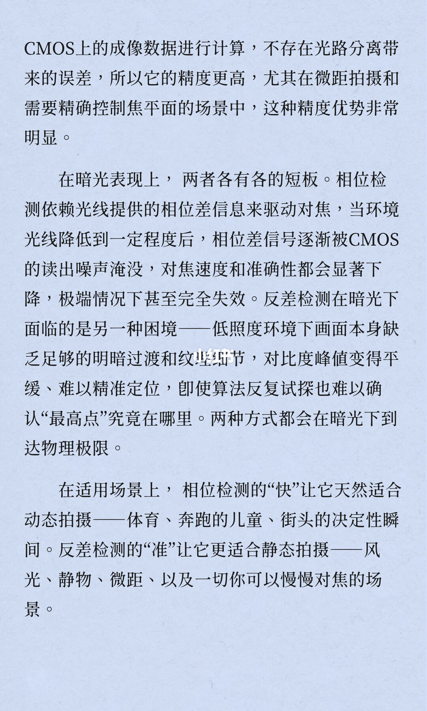
页首接上一页：CMOS 上的成像数据进行计算，不存在光路分离带来的误差，所以它的精度更高，尤其在微距拍摄和需要精确控制焦平面的场景中，这种精度优势非常明显。
在暗光表现上，两者各有各的短板。相位检测依赖光线提供的相位差信息来驱动对焦，当环境光线降低到一定程度后，相位差信号逐渐被 CMOS 的读出噪声淹没，对焦速度和准确性都会显著下降，极端情况下甚至完全失效。反差检测在暗光下面临的是另一种困境——低照度环境下画面本身缺乏足够的明暗过渡和纹理细节，对比度峰值变得平缓、难以精准定位，即使算法反复试探也难以确认「最高点」究竟在哪里。两种方式都会在暗光下到达物理极限。
在适用场景上，相位检测的「快」让它天然适合动态拍摄——体育、奔跑的儿童、街头的决定性瞬间。反差检测的「准」让它更适合静态拍摄——风光、静物、微距、以及一切你可以慢慢对焦的场景。这一页没有快门或对焦区域设置。
14/16
混合对焦是先锁大致位置，再微调
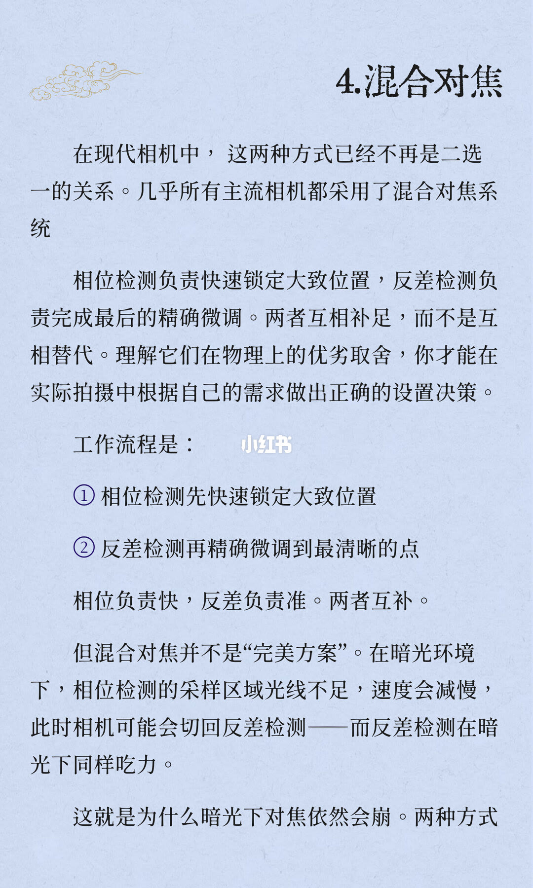
「4.混合对焦」。在现代相机中，这两种方式已经不再是二选一的关系。几乎所有主流相机都采用了混合对焦系统。相位检测负责快速锁定大致位置，反差检测负责完成最后的精确微调。两者互相补足，而不是互相替代。理解它们在物理上的优劣取舍，你才能在实际拍摄中根据自己的需求做出正确的设置决策。
工作流程是：① 相位检测先快速锁定大致位置。② 反差检测再精确微调到最清晰的点。相位负责快，反差负责准。两者互补。
但混合对焦并不是「完美方案」。在暗光环境下，相位检测的采样区域光线不足，速度会减慢，此时相机可能会切回反差检测——而反差检测在暗光下同样吃力。这就是为什么暗光下对焦依然会崩。两种方式——下一页接「在暗光下都有各自的极限。」「几乎所有主流相机」没有品牌清单。第 8 页的「暗光下对焦依然稳定」和第 14 页的「依然会崩」是两句都印在图上的话。
15/16
动用 AF-C，静用 AF-S，暗光改手动
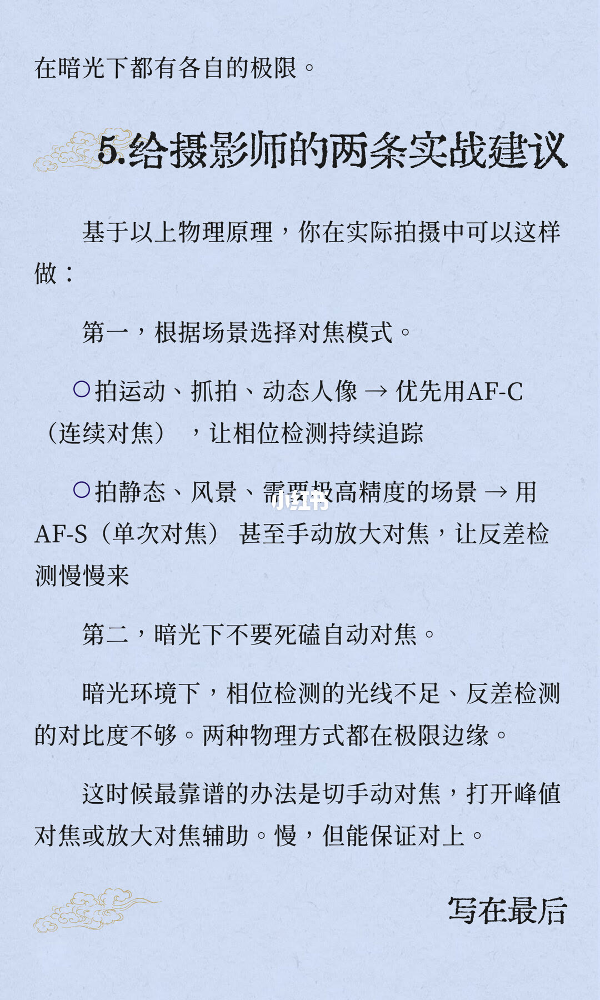
页首接上一页：「在暗光下都有各自的极限。」「5.给摄影师的两条实战建议」。基于以上物理原理，你在实际拍摄中可以这样做：
第一，根据场景选择对焦模式。拍运动、抓拍、动态人像，优先用 AF-C（连续对焦），让相位检测持续追踪。拍静态、风景、需要极高精度的场景，用 AF-S（单次对焦），甚至手动放大对焦，让反差检测慢慢来。
第二，暗光下不要死磕自动对焦。暗光环境下，相位检测的光线不足、反差检测的对比度不够。两种物理方式都在极限边缘。这时候最靠谱的办法是切手动对焦，打开峰值对焦或放大对焦辅助。慢，但能保证对上。图上没有峰值颜色，也没有菜单位置。页末「写在最后」，正文在下一页。
16/16
导航会飘，山顶要走过才知道
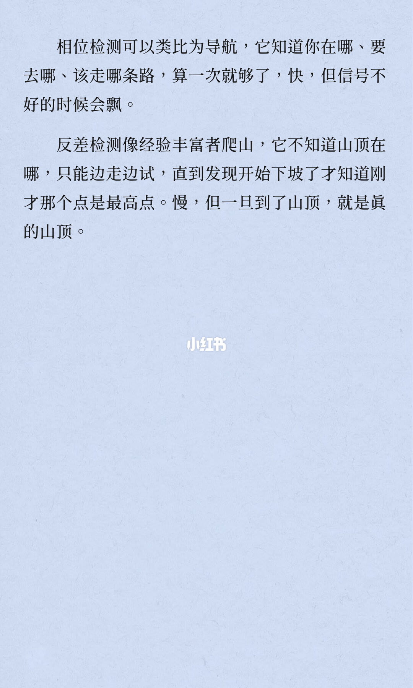
相位检测可以类比为导航，它知道你在哪、要去哪、该走哪条路，算一次就够了，快，但信号不好的时候会飘。反差检测像经验丰富者爬山，它不知道山顶在哪，只能边走边试，直到发现开始下坡了才知道刚才那个点是最高点。慢，但一旦到了山顶，就是真的山顶。
收尾
一次算到位，还是走过山顶再退回
结论
相位对焦用左右视差一次算出方向和距离，所以快，暗光下相位差会被噪声淹没。反差对焦只看画面清不清楚，必须走过对比度峰值再退回，并做一次细扫，所以慢，但直接看 CMOS 成像，微距和要卡焦平面时更稳。混合对焦是先相位后反差。封面问怎么选模式，图上给出的选择只在第 15 页：运动用 AF-C，静态高精度用 AF-S 或手动放大，暗光改手动并打开峰值或放大。
支撑页
痛点在 1/16，句子接到 2/16。单反反光镜分光在 2/16。遮蔽像素和 2013 年、单位像素 2 个光电二极管在 3/16。视差与波形重合在 4/16。方向和距离在 5/16。L/R、自相关、shift、刻度 -10 到 10 在 6/16，并接到 7/16 的「镜头直接移动到位」。暗光代价和 100% 像素在 7/16，尾字「像。」在 8/16。双核结构和「不测量距离」在 8/16。爬山在 9/16。走过站、CAF 粗扫、细扫在 10/16。白墙失效和实时取景放大在 11/16，「舍。」接到 12/16。GPS 与爬山、反光板误差在 12/16，精度和暗光场景接到 13/16。混合两步在 14/16，极限接到 15/16 的 AF-C、AF-S 和手动。导航与山顶在 16/16。
边界
图上没有对焦点数，没有菜单位置，没有放大倍率。12/16 印了「时间差」，和 4/16 至 6/16 的视差、落点、shift 冲突，以那三页图解为准。6/16 写 sensor 移动，5/16 和 7/16 写镜头移动。12/16 的反光板误差对应 2/16 的独立对焦模块，不能直接套到 7/16、8/16 的全像素双核上。8/16 写旗舰暗光「依然稳定」，14/16 写暗光「依然会崩」，两句都保留。10/16 曲线刻度和知乎账号无法确认。3/16 图注「右边」后两个字无法确认。1/16 与 2/16、6/16 与 7/16、7/16 与 8/16、11/16 与 12/16、12/16 与 13/16、14/16 与 15/16 都是跨页句子。